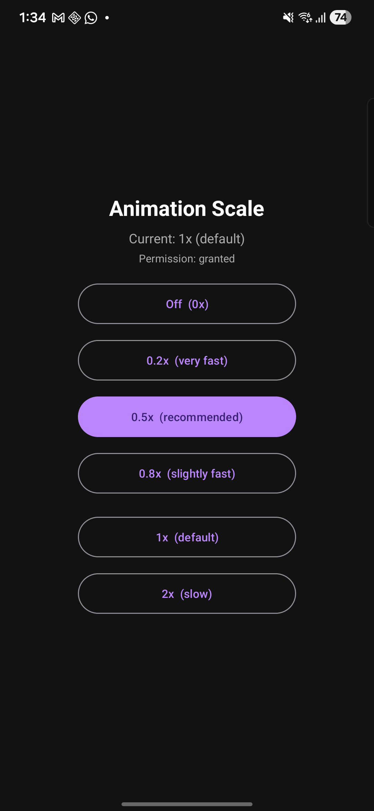
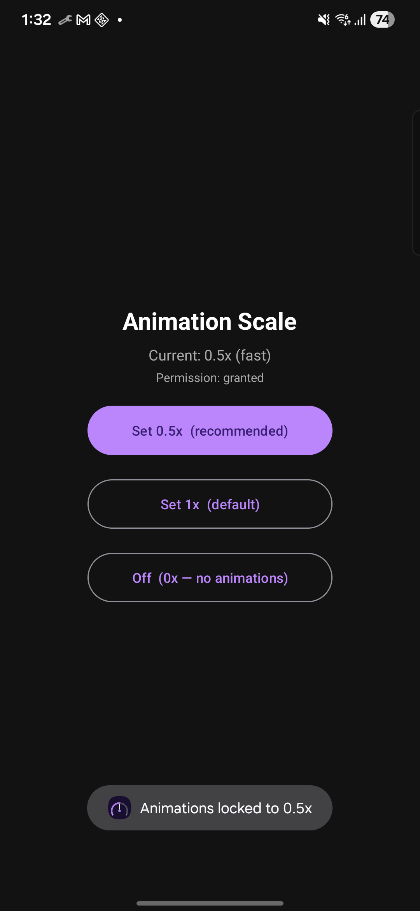

Lock Android animation speed to 0.5× and keep it there — even when Developer Options is off. No root required.

Most banking apps refuse to open when Developer Options is enabled. But turning it off resets your animation speed back to 1× — every. single. time. AnimScale ends that cycle permanently.
Turn off Dev Options to use banking app → animations snap back to 1× → turn Dev Options back on → repeat forever.
Set 0.5× once → keeper service locks it → turn Dev Options off freely → animations stay fast. Done.
Off, 0.2×, 0.5×, 0.8×, 1×, and 2× — tap once to apply and lock.
A lightweight background service watches for any change and restores your chosen speed within 300ms.
Your scale is restored automatically on every boot — no need to open the app.
No internet permission. No analytics. No data collection. Ever. Open source and auditable.
Running on a Samsung Galaxy S24 Ultra with Developer Options disabled.
6 speed presets

Scale locked ✓
One script builds the APK, installs it on your phone, and grants the two required permissions. Takes about 30 seconds. USB or wireless ADB both work.
Open the app, tap 0.5× (recommended). The keeper service starts and your scale is locked immediately.
Done. Banking apps work. Animations stay fast. No further action needed — ever. Run setup.sh again only if you reinstall.
# Clone the repo git clone https://github.com/avenue90/AnimScale.git cd AnimScale # Build, install, and grant permissions in one step ./setup.sh
It's free and open source. If it saved you time, a coffee is always appreciated ☕
☕ Buy me a coffee